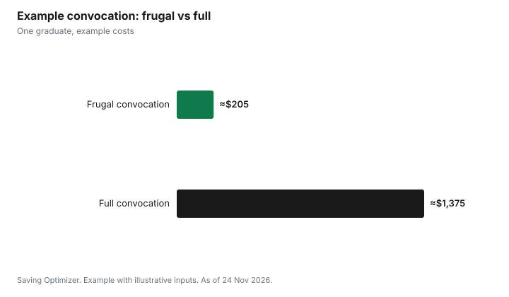

Education · Canada
Convocation and Graduation Costs: Gown Rental, Photos and Fees

Convocation in Canada usually costs less than families expect for the ceremony itself and more than they expect for everything around it. Some universities charge a graduation or diploma fee, and almost all require an academic gown and hood, which you rent or buy. Photos, diploma frames, flowers, travel for family and a celebration dinner are optional, and together they're often the biggest part of the bill.
Key takeaways
- Check your student account for a graduation or diploma fee. Some schools charge one; others include it in tuition.
- Gown and hood are required at most ceremonies. Renting is cheaper than buying; online ordering usually has a deadline.
- Photo packages and diploma frames are optional. Your own phone photos are free.
- Guest tickets are usually free but limited. Ask the convocation office early.
- Example: a frugal convocation costs about $205, while one with photos, a frame, hotel and dinner costs about $1,375.
Graduation fees
Some Canadian universities charge a graduation or convocation fee when you apply to graduate, while others build it into tuition. Look at your student account and the registrar's graduation page in the term you expect to finish. If you graduate in absentia, you may still pay the fee and receive your diploma by mail; mailing can cost extra.
Gown rental
All graduating students at most Canadian universities must wear an academic gown and hood that match their degree. Many schools use an outside supplier for rentals. At the University of Waterloo, for example, regalia is ordered online through Build-A-Grad, with an online ordering deadline of 2 October 2026 for fall convocation, and the school store notes you can rent on the day but sizes aren't guaranteed. Renting a gown doesn't register you for the ceremony; you register separately.
- Order before the deadline to avoid day-of shortages.
- Return the gown on time; late returns may carry a fee.
- Buying only makes sense if more than one family member will graduate in the same colours.
Photos
Official photographers usually take a free proof at the stage and then sell packages and frames. Those packages and a licensed diploma frame can cost more than the gown. Alternatives: ask a friend with a good phone, take photos at a campus landmark the day before, and buy a standard frame from a store. Check whether the official photographer lets you download digital proofs for free.
Guest tickets
Ceremony tickets are usually free but limited, often to a small number per graduate. Ceremonies are often live-streamed, which is a free option for family who can't travel. Queen's, for example, held Fall 2026 convocation on 7 to 11 December at the Isabel Bader Centre; check your own school's ceremony page for the date, location and ticket limit as soon as it's posted, because hotel prices in university towns rise on convocation weekends.
| Cost | Typical source | How to save |
|---|---|---|
| Graduation fee | Registrar, if your school charges one | Check if it's already in tuition |
| Gown and hood | Rental supplier | Order online before the deadline |
| Photos and frame | Official photographer | Phone photos; buy a standard frame |
| Guests' travel and hotel | Family | Book early; share a rental; watch the live stream |
| Celebration meal | Family | Lunch instead of dinner; picnic on campus |
Budget: an example
An example graduate compares a frugal convocation with a full one.

Frugal: $60 example gown rental, $25 standard frame, and $120 for a family lunch, about $205. Full: $60 gown, $250 photo package and licensed frame, $500 for two nights in a hotel and $565 for dinner and flowers, about $1,375. The ceremony is the same in both. If you have student loans, the six-month grace period starts after you finish school, so a modest celebration helps; see our student loan repayment guide.
Sources
- University of Waterloo, Convocation regalia and Build-A-Grad registration (online ordering deadline 2 October 2026; day-of rental with no size guarantee; renting doesn't register you), checked 24 Nov 2026.
- Queen's University, Fall 2026 Convocation (7–11 December 2026, Isabel Bader Centre), checked 24 Nov 2026.
- York University, Convocation FAQs (registration and guest tickets), checked 24 Nov 2026.
Frequently asked questions
How much does convocation cost in Canada?
The ceremony itself is often free or covered by a graduation fee, plus gown and hood rental. Photos, frames, travel and a celebration meal are optional and can bring the total into the hundreds or more.
Do I have to rent a graduation gown?
At most Canadian universities, yes, if you attend the ceremony. Gowns and hoods match your degree and are rented through the school or its supplier, usually with an online ordering deadline.
Is there a fee to graduate from university in Canada?
Some universities charge a graduation or diploma fee; others include it in tuition. Check your student account and the registrar's graduation page.
Are convocation photos worth it?
They're optional. Official packages and licensed frames can cost more than the gown. Many families take their own photos and buy a standard frame.
How many guests can I bring to convocation?
It depends on the school and venue. Tickets are usually free but limited, and many ceremonies are live-streamed for family who can't attend.
Researched and drafted with AI assistance and fact-checked against official Canadian sources. How we create content.
Note: Fees and rental arrangements vary by school. Confirm with your registrar and convocation office. Education only.